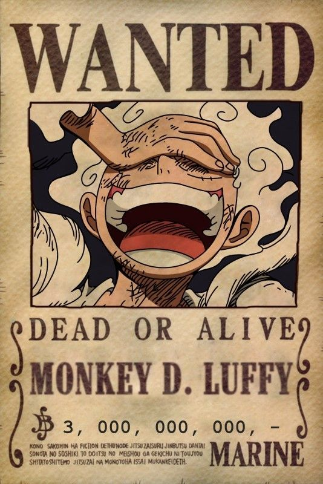

Monkey D. Luffy
The Future King of the Pirates
Monkey D. Luffy is the main character of the anime and manga One Piece. He is the captain of the Straw Hat Pirates and dreams of becoming the King of the Pirates. Luffy is known for his cheerful personality, strong will, and deep loyalty to his friends. He ate the Gum-Gum Fruit, which gave his body rubber-like properties. Throughout his journey, he gathers a strong crew and faces powerful enemies, all while heading toward the mysterious treasure known as the One Piece.